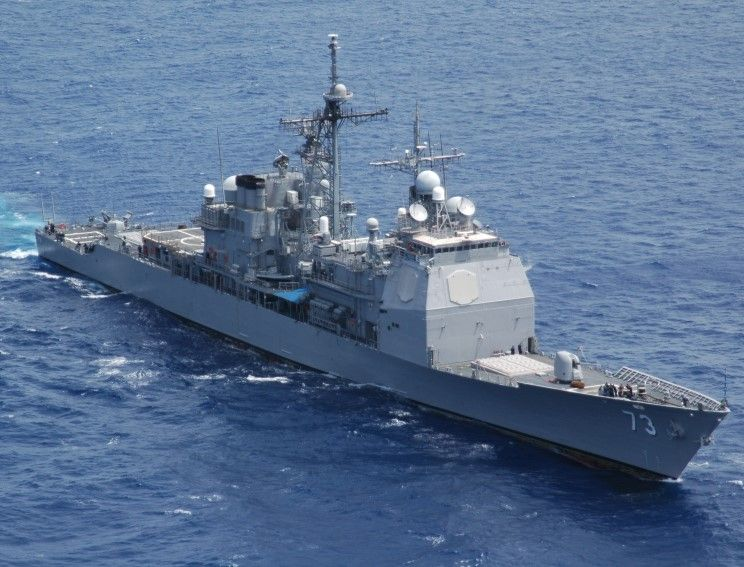

- topic1
- topic2
- topic3
topic1

이르면 11월부터 군 간부와 병사 간 두발 규정 차별이 없어진다.
25일 국방부와 각 군 관계자 등에 따르면 국방부는 두발 규정 관련 ‘가이드라인’이 담긴 지침을 조만간 전군에 하달할 예정이다.
현재 각 군에서 자체 마련한 개선안을 취합했으며, 막바지 검토 중인 것으로 파악됐다. 국방부 지침이 하달되면 각 군의 관련 규정을 개정해 곧바로 시행에 들어가게 된다.
이번 조처의 핵심은 간부와 병사 간 두발 규정에 차등을 두지 않는 것이다. 누구나 동등하게 정해진 범위 내에서 두발 유형을 선택할 수 있도록 하자는 취지다.
육·해·공군별로 머리 길이 제한 등에서 일부 차이가 있는데 간부는 ‘(간부)표준형’과 ‘스포츠형’(운동형) 중 선택할 수 있도록 했다. 반면 병사에게는 상대적으로 짧은 스포츠형만 허용해 제약이 더 심했다.
해병대의 경우 간부는 앞머리 5㎝·상단 2㎝ 이내의 ‘상륙형’, 병사에게 앞머리 3㎝·귀 상단 5㎝ 이내의 ‘상륙돌격형’이 각각 적용됐다.
그러나 앞으로는 간부뿐만 아니라 병사들도 원하면 이른바 ‘간부형 머리’로 자를 수 있게 되므로 병사 입장에선 두발 규정이 일정 부분 완화되는 셈이다.
이런 변화는 계급에 따라 두발 규정을 달리 적용하는 것이 불합리한 차별에 해당한다는 비판이 지속된 데 따른 조처다.
이와 관련, 작년 9월 군인권센터도 국가인권위원회에 관련 진정을 냈고, 이에 인권위는 국방부에 ‘사회적 신분에 따른 평등권 침해의
차별 행위이므로 각 군 규정의 개선이 필요하다’는 취지의 진정 내용을 전달하며 관련 자료 제출을 요구했다.